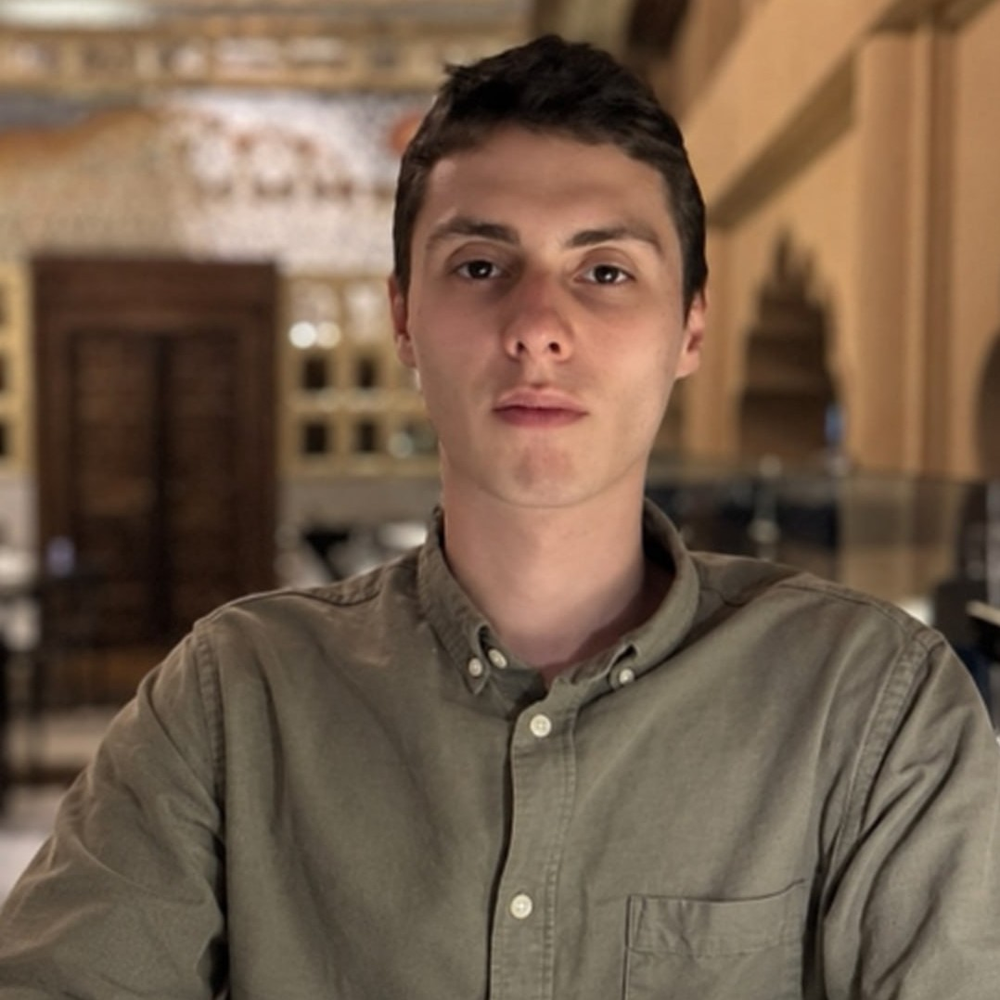

Advancing the responsible, effective, and ethical use of artificial intelligence across teaching, learning, research, scholarship, and operations at North American University.
“The AI Task Force explores, implements, and advises on the responsible and effective use of artificial intelligence in academics and operations. The committee provides recommendations to leadership for strategic adoption of AI.”
— NAU Policy Manual 2025–2026, Standing CommitteesThe NAU AI Task Force advances the responsible, effective, and ethical use of artificial intelligence across teaching, learning, research, scholarship, and operations. In service of the University’s mission of teaching excellence and student-centeredness, it explores emerging AI capabilities, pilots and implements practical solutions, strengthens the University’s research and scholarly capacity, and advises leadership on the strategic adoption of AI — safeguarding academic integrity, human dignity, and the University’s values.
To make North American University a recognized model for the responsible integration of AI in higher education — where AI amplifies teaching excellence, accelerates faculty and student research and scholarship, expands student success and global competency, strengthens institutional effectiveness, and is governed by clear ethical standards that keep people, not technology, at the center.
The strategy is organized as five pillars, each a direct instrument of one of NAU’s five strategic goals (2025–2028). The Task Force advances the University’s plan — it does not run parallel to it.
| NAU Strategic Goal | AI Task Force Pillar |
|---|---|
| Goal 1 · Enhance the quality of academic programs | 1 · AI for Academic Quality & Research — curriculum & faculty AI literacy; research productivity, tools & integrity |
| Goal 2 · Strengthen institutional effectiveness | 2 · AI for Institutional Effectiveness — AI in operations, training, data-informed decisions |
| Goal 3 · Student-centeredness & global citizenship | 3 · AI for Students & Global Citizenship — advising, tutoring, accessibility, multilingual support |
| Goal 4 · Engage with stakeholders | 4 · Governance, Ethics & Engagement — policies, standards, transparent stakeholder input |
| Goal 5 · Increase financial capacity & resources | 5 · AI Capacity & Resources — grants, partnerships, infrastructure & tools |
People, not technology, at the center.
The Task Force operates by the University’s core values, expressed as working principles.
People over technology in every decision.
Honesty and openness in every deployment.
Continuous learning grounded in evidence.
Working across academics and operations.
Bold but accountable adoption of AI.
Clear ethical guardrails for all AI use.
Before advising the University, the committee reaches a shared baseline through four onboarding sessions, then executes a three-phase action plan across the year.
All year, cross-cutting: stakeholder engagement (faculty, students, employers); quarterly updates to leadership; a research emphasis, including pursuit of at least one external grant.
Map current AI use across academics and operations; find gaps and quick wins.
Details →Faculty & staff guidance, complementing the Student AI Usage Policy.
Details →Launch 2–3 pilots — e.g., an advising / help-desk agent and a faculty research toolkit.
Details →Train faculty and staff; seed a culture of responsible, effective AI use.
Details →Recommend a phased AI roadmap and resource plan to leadership.
Details →


To run the Fall 2026–Spring 2027 pilots responsibly, the Task Force requests controlled institutional support, tied to defined pilots and success metrics.
Support is requested as a controlled, metrics-tied allocation and reviewed against pilot outcomes. Detailed resourcing is provided to leadership in the Operational Plan.
The AI Task Force welcomes input from faculty, students, staff, and community partners. To share feedback, propose a pilot, or learn more, contact the committee chair.